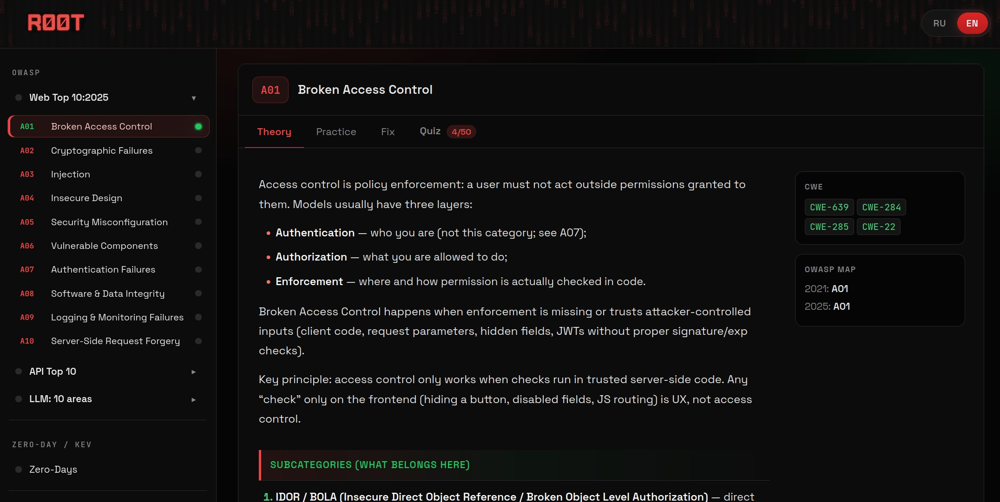
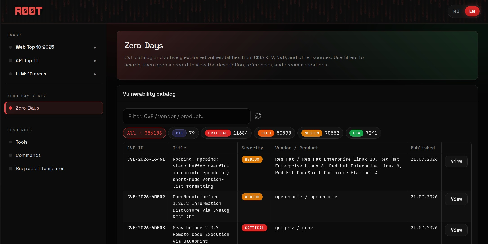
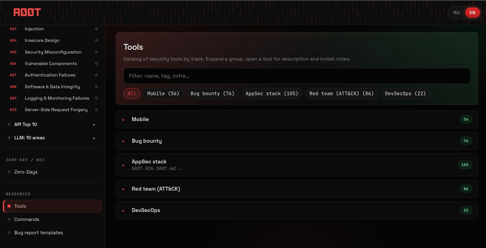

Изучай
Двуязычные материалы по OWASP Web, API и LLM Security с CWE и практическим контекстом.
OPEN SOURCE · OFFLINE FIRST · SELF-HOSTED
Локальный AppSec-полигон, который объединяет теорию OWASP, браузерные симуляции, исправление кода, тесты и исследование открытых данных CVE.
ЕДИНЫЙ ЛОКАЛЬНЫЙ ПРОЦЕСС
RØOT не является живой уязвимой целью и не отправляет вашу работу во внешний сервис. Безопасные симуляции помогают понять причины типичных ошибок защиты приложений.
Двуязычные материалы по OWASP Web, API и LLM Security с CWE и практическим контекстом.
Безопасные браузерные симуляции, флаги и последовательные подсказки.
Сравнение уязвимого и защищённого кода с последующей проверкой знаний.
Воспроизводимый офлайн-снимок данных из CISA KEV и CVE List V5.
СОЗДАНО ДЛЯ ПРАКТИКИ
Запускайте RØOT через Python или Docker, сохраняйте прогресс в браузере и используйте платформу в изолированном классе, домашней лаборатории или закрытой AppSec-среде.

РАБОЧАЯ СРЕДА


ЛОКАЛЬНЫЙ ЗАПУСК
Достаточно Python 3.10+. Встроенные материалы и CVE-снимок не требуют внешних токенов.
git clone https://github.com/madnessbrainsbl/ROOT.git
cd ROOT
python serve.pydocker compose up --buildRØOT v0.1.0
Откройте полигон, пройдите одну лабораторию и сообщите, что оказалось непонятным.